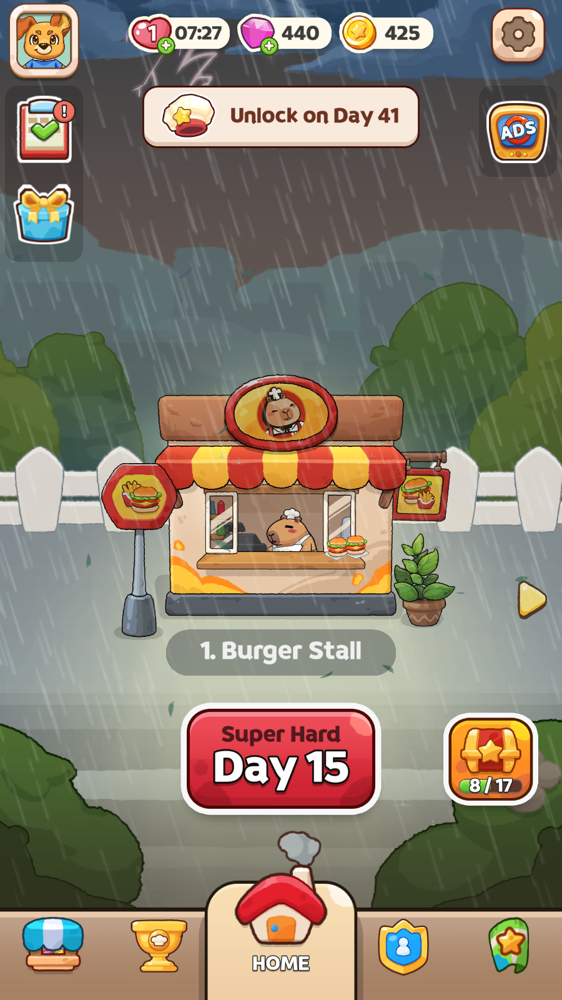

Chuỗi thắng Dreamy (Dreamy Streak / Win Streak)
Mô tả
- Sự kiện thắng liên tiếp: mỗi level thắng nối chuỗi và cộng điểm, thua thì chuỗi về 0 nhưng điểm giữ nguyên.
- Điểm đổ vào thanh gồm 25 bước thưởng (bảng Colony mặc định, 18 661 điểm), bước cuối là 5000 gem.
- Mỗi vòng 3,5 ngày (cùng chu kỳ Tháp); bảng thưởng chọn theo nhóm chi tiêu của người chơi nếu RC bật.
- Mở ở level 41 (RC
level_unlock_dreamy_streak); trước đó icon vẫn hiện từ level 1 ở dạng khoá: banner "Unlock on Day 41" giữa đỉnh màn Home.
Thiết kế chi tiết
Tóm tắt thiết kế
- Code Thua chỉ mất chuỗi, giữ điểm:
HandleLoseStreakđặtstreak= 0 vàpointCache=point. Nhẹ tay hơn Tháp (rơi về mốc). - Code Điểm mỗi lần thắng tăng theo độ dài chuỗi: thắng thứ 1 / 2 / 3 / 4 / từ 5 cộng 1 / 5 / 10 / 25 / 100 điểm (
ListStreakPoint). 5 trận đầu của chuỗi chỉ được 141 điểm, từ trận thứ 5 mỗi trận bằng 4 lần trận thứ 4, nên mất chuỗi là mất gần hết tốc độ tích điểm dù điểm cũ vẫn giữ. - Nhận định Bước cuối (5000 gem) gần như không với tới: bảng Colony cần 18 661 điểm, tức tối thiểu 191 trận thắng liền không thua trong một vòng 3,5 ngày; thua sau mỗi 5 trận thắng thì cần 665 trận thắng. Các bước đầu (tới bước 4, 611 điểm = 10 trận thắng liền) mới là phần thưởng người chơi thực sự nhận (suy luận từ bảng bên dưới).
- APK 4 bảng thưởng: Colony 25 bước mặc định, và NPP / DH / W 20 bước theo nhóm chi tiêu; mọi bảng kết thúc bằng 5000 gem.
- Code Đây là sự kiện thiết kế theo nhóm người chơi: RC
dreamy_streak_reward_config= 1 (MagicSort) chọn bảng theoSegmentManager.Current.spend; mặc định luôn Colony. - Live 16/11 Save:
rewardTable= 3 (Colony),endTime19/11 12:00 UTC; người chơi (nhóm NP) chưa mở khoá.
Luồng người chơi từng bước
- Mở khoáHệ thống CodeLevel 41 mở popup giới thiệu.
- Thắng nối chuỗiNgười chơi CodeMỗi thắng +1 chuỗi, cộng điểm theo độ dài chuỗi.
- Qua bướcHệ thống CodeĐủ điểm bước thì bay thưởng của bước đó.
- ThuaNgười chơi CodeChuỗi về 0, điểm giữ nguyên, hiện LosePanel.
- Hết vòngHệ thống CodeSau 3,5 ngày reset, chọn lại bảng thưởng.
Bảng Colony (mặc định, 25 bước)
| Bước | Điểm của bước | Thưởng |
|---|---|---|
| 0 | 1 | tim vô hạn (phút) 15 |
| 1 | 10 | gem 50 |
| 2 | 150 | tim vô hạn (phút) 15 |
| 3 | 250 | gem 100 |
| 4 | 200 | tim vô hạn (phút) 30 |
| 5 | 450 | Magnet 1 |
| 6 | 150 | tim vô hạn (phút) 30 |
| 7 | 250 | gem 100 |
| 8 | 350 | Swap 1 |
| 9 | 200 | gem 200 |
| 10 | 350 | Magnet 1 |
| 11 | 250 | tim vô hạn (phút) 30 |
| 12 | 450 | Stack Box 1 |
| 13 | 300 | gem 200 |
| 14 | 350 | SpeedUp 15 + tim vô hạn (phút) 15 |
| 15 | 500 | tim vô hạn (phút) 15 + Swap 1 + gem 300 |
| 16 | 400 | Magnet 1 |
| 17 | 250 | gem 100 |
| 18 | 600 | SpeedUp 30 |
| 19 | 800 | gem 600 + SpeedUp 15 |
| 20 | 800 | Magnet 1 + Stack Box 1 |
| 21 | 250 | tim vô hạn (phút) 30 |
| 22 | 1000 | Magnet 1 + Swap 1 + gem 100 + SpeedUp 15 |
| 23 | 350 | tim vô hạn (phút) 60 |
| 24 | 10000 | gem 5000 |
Nguồn: SODreamyStreakConfig.asset, listLevelColony. Mã loại thưởng RwItemType: 1 Soft (xu), 3 UnlimitedHeart (phút), 5 Hard (gem), 6 SpeedUp, 20 BoosterIngredientPick (Magnet), 22 BoosterShiftUpRow (Swap), 23 BoosterAutoCook (Bell), 25 BoosterStackBox, 51 ProfileFrame, 52 ProfileNameFx.
Bảng NPP (20 bước)
| Bước | Điểm của bước | Thưởng |
|---|---|---|
| 0 | 5 | tim vô hạn (phút) 15 |
| 1 | 100 | Magnet 1 |
| 2 | 200 | tim vô hạn (phút) 30 |
| 3 | 300 | Swap 1 |
| 4 | 300 | tim vô hạn (phút) 45 |
| 5 | 500 | Bell 1 |
| 6 | 500 | gem 150 |
| 7 | 300 | tim vô hạn (phút) 60 |
| 8 | 600 | gem 200 |
| 9 | 400 | tim vô hạn (phút) 90 |
| 10 | 800 | Swap 2 |
| 11 | 600 | tim vô hạn (phút) 120 |
| 12 | 800 | Magnet 2 |
| 13 | 1600 | gem 1000 |
| 14 | 400 | tim vô hạn (phút) 180 |
| 15 | 800 | gem 250 |
| 16 | 700 | Bell 1 |
| 17 | 1000 | gem 300 |
| 18 | 400 | tim vô hạn (phút) 240 |
| 19 | 3000 | gem 5000 |
listLevel; DH và W cùng 20 bước, thưởng gần giống nhưng điểm mỗi bước cao hơn (tổng 19 355 và 25 505) và vài bước khác thưởng (ví dụ bước 13: 1000 gem ở NPP / DH, 250 gem ở W).
Số trận thắng cần để tới một bước (tính từ code + bảng thưởng)
| Bảng | Bước | Thưởng | Điểm cộng dồn | Thắng liền không thua | Thua sau mỗi 5 trận thắng | Thua sau mỗi 3 trận thắng |
|---|---|---|---|---|---|---|
| Colony | 0 | tim vô hạn (phút) 15 | 1 | 1 | 1 | 1 |
| Colony | 1 | gem 50 | 11 | 3 | 3 | 3 |
| Colony | 4 | tim vô hạn (phút) 30 | 611 | 10 | 25 | 116 |
| Colony | 9 | gem 200 | 2 011 | 24 | 74 | 378 |
| Colony | 14 | SpeedUp 15 + tim vô hạn (phút) 15 | 3 711 | 41 | 135 | 696 |
| Colony | 19 | gem 600 + SpeedUp 15 | 6 261 | 67 | 225 | 1175 |
| Colony | 24 | gem 5000 | 18 661 | 191 | 665 | 3500 |
| NPP | 0 | tim vô hạn (phút) 15 | 5 | 2 | 2 | 2 |
| NPP | 1 | Magnet 1 | 105 | 5 | 5 | 21 |
| NPP | 4 | tim vô hạn (phút) 45 | 905 | 13 | 35 | 171 |
| NPP | 9 | tim vô hạn (phút) 90 | 3 205 | 36 | 115 | 602 |
| NPP | 14 | tim vô hạn (phút) 180 | 7 405 | 78 | 265 | 1389 |
| NPP | 19 | gem 5000 | 13 305 | 137 | 475 | 2496 |
Ngưỡng của bước là tổng cộng dồn điểm các bước trước (SODreamyStreakConfig.GetLevelPassed trừ dần point của từng bước). Điểm mỗi trận theo ListStreakPoint [1, 5, 10, 25, 100]. Hai cột "thua sau mỗi n trận" là kịch bản minh hoạ (Nhận định): mỗi lần thua chuỗi về 0, điểm giữ nguyên; chưa tính trận thua.
Bảng thưởng theo nhóm chi tiêu mặc định (`SODreamyStreakConfig.DefaultRewardTableBySpend`)
| Nhóm chi tiêu (Segment) | Bảng thưởng |
|---|---|
| NP | NPP |
| T1 | NPP |
| T2 | DH |
| T3 | DH |
| T4 | W |
Blob [0, 0, 1, 1, 2] trong .cctor; chỉ dùng khi RC dreamy_streak_reward_config = 1 (mặc định 0 → luôn Colony); RC dreamy_streak_reward_table_by_spend có thể ghi đè.
Vận dụng cho game khác
- Thua mất chuỗi nhưng giữ tiến độ: giảm cảm giác bị phạt, người chơi vẫn muốn chơi tiếp.
- Bảng thưởng theo nhóm chi tiêu cùng một giao diện: người chi nhiều có ngưỡng điểm cao hơn.
- Thưởng cuối cực lớn (5000 gem) là mốc đích hiếm khi đạt, kéo người chơi cố gắng.
Bảng tổng hợp mọi tính năng đã làm chi tiết: FoodiePop_ThietKeChiTiet.xlsx.
Mở khóa & điểm vào
DreamyStreakManager.IsUnlocked = SODreamyStreakConfig.IsEnabled và MainLevelCompleted >= mốc - 1; điểm chỉ cộng khi IsCanIncreasePoint (completed >= mốc). Mặc định DefaultLevelUnlock = 41 (Code), khớp 1.11. Icon Home dùng IsIconHomeActive (hằng LevelShowHomeIcon = 1), nên trước level 41 icon hiện ở dạng khoá: DreamyStreakFIconCtrl.CheckFeatureActive bật Obj_Feature theo IsUnlocked, ngược lại bật Obj_Lock; UpdateLvUnlock ghi "Unlock on Day {0}" với 41 (Playtest 16/11: banner giữa đỉnh Home, WinstreakContainer/R1_WinStreak_HomeBtn trong NewHome.unity).
Điểm vào:
- Icon Streak trên Home (
DreamyStreakFIconCtrl) - Popup mở khoá
PopupDreamyStreakUnlockCtrl - Popup chính
PopupDreamyStreakCtrl(danh sách bước) DreamyStreakLosePanelkhi thua có chuỗi,DreamyStreakNextStreakAnimkhi thắng nối chuỗi
Cách hoạt động
- Đủ level:
CheckPlayTutorialUnlockmởPopupDreamyStreakUnlockCtrl1 lần. - Vào level:
SetOnPlayingLevelđặtonPlayingLevel= true. - Thắng:
HandleWinStreak:point+=GetPointByStreak(streak)(tính bằngstreaktrước khi cộng), rồistreak+ 1; lần thắng thứ 1 / 2 / 3 / 4 / từ 5 của chuỗi cộng 1 / 5 / 10 / 25 / 100 điểm, logfoodie_streak_win_streak,QuestsManager.ChangeQuestCounter(ReachDreamyStreak). - Thua hoặc thoát:
HandleLoseStreakđặtstreak= 0,streakCache= 0,pointCache=point(điểm giữ lại), logfoodie_streak_lose_streak. - Điểm qua ngưỡng một bước:
CheckClaimRewardbay thưởng của bước đó (GameItemManager.ClaimReward), đánh dấulistLevelStatus. - Hết vòng 3,5 ngày:
ResetDatatạo model mới, chọn lại bảng thưởng (PickRewardTable).
Ảnh chụp
Bấm ảnh để phóng to, dùng phím ← → để chuyển ảnh. Nhãn màu cho biết nguồn bằng chứng của ảnh.


Phần thưởng
| Ngữ cảnh | Phần thưởng | Evidence |
|---|---|---|
| Bước thưởng (Colony) | Tim vô hạn 15-60 phút, gem 50-600, Magnet, Swap, Stack Box, SpeedUp 15-30; bước 24 (cuối): 5000 gem | SODreamyStreakConfig.ShowReward |
| Bước có thưởng phụ (Colony 14, 15, 19, 20, 22) | Cộng thêm tim vô hạn, Swap, gem hoặc SpeedUp theo extraRewards | DreamyStreakLevelCfModel.AllRewards |
Số liệu chính
| Chỉ số | Giá trị | Nguồn |
|---|---|---|
| Bước thưởng | 25 (Colony), 20 (NPP / DH / W) | SODreamyStreakConfig.asset |
| Tổng điểm Colony | 18 661 | tổng `point` |
| Thưởng cuối | 5000 gem | listLevel* |
| Vòng | 302400 giây | SODreamyStreakConfig.ExistTime |
Use case (10)
Bấm vào từng use case để mở. Mở/đóng tất cả
UC-01 Mở khoá chuỗi thắng
Các bướcR1HomeFlowgọiCheckPlayTutorialUnlock- Mở
PopupDreamyStreakUnlockCtrl
| Actor | System |
|---|---|
| Trigger | Về Home khi đủ level |
| Điều kiện | IsUnlocked và playTutUnlock = false |
| Kết quả | Có thể tích điểm chuỗi |
| Quy tắc / số liệu | - |
| Evidence | DreamyStreakManager.CheckPlayTutorialUnlock |
UC-02 Mở popup lần đầu
Các bướcPopupDreamyStreakCtrl.OnOpenedgọiSaveFirstOpen- Cuộn tới bước hiện tại (
MoveViewToCurLevel)
| Actor | Player |
|---|---|
| Trigger | Bấm icon |
| Kết quả | Thấy 25 bước và điểm |
| Quy tắc / số liệu | - |
| Evidence | DreamyStreakManager.SaveFirstOpen |
UC-03 Vào level (đánh dấu đang chơi)
Các bướcSetOnPlayingLevelđặtonPlayingLevel= true
| Actor | System |
|---|---|
| Trigger | Bắt đầu level chính |
| Kết quả | Thoát app giữa level tính là thua |
| Quy tắc / số liệu | ReloadData gọi HandleLoseStreak nếu onPlayingLevel = true |
| Evidence | DreamyStreakManager.SetOnPlayingLevel |
UC-04 Thắng level nối chuỗi
Các bướcHandleWinStreak:streak+ 1point+=SODreamyStreakConfig.GetPointByStreak(streak)vớistreakcũ, sau đóstreak+ 1- Log
foodie_streak_win_streak, tăng questReachDreamyStreak
| Actor | System |
|---|---|
| Trigger | Thắng level chính |
| Điều kiện | IsCanIncreasePoint (completed >= mốc 41) |
| Kết quả | Chuỗi dài hơn cộng nhiều điểm hơn |
| Quy tắc / số liệu | ListStreakPoint = [1, 5, 10, 25, 100] (nạp trong .cctor); GetPointByStreak(n) trả phần tử n, n >= 5 trả phần tử cuối (100). Thắng thứ 1 / 2 / 3 / 4 / từ 5 của chuỗi: +1 / +5 / +10 / +25 / +100 điểm |
| Evidence | DreamyStreakManager.HandleWinStreak |
UC-05 Thua level, chuỗi về 0
Các bướcHandleLoseStreak:onPlayingLevel= false,streakCache= 0,streak= 0,pointCache=pointDreamyStreakLosePanelbáo mất chuỗi, logfoodie_streak_lose_streak
| Actor | System |
|---|---|
| Trigger | Thua level hoặc thoát giữa level |
| Kết quả | Điểm đã tích giữ nguyên, chỉ mất chuỗi hiện tại |
| Quy tắc / số liệu | IsCanLoseStreak chỉ đúng khi streak > 0 và chưa tối đa điểm |
| Evidence | DreamyStreakManager.HandleLoseStreak |
UC-06 Qua bước và nhận thưởng
Các bướcSODreamyStreakConfig.GetLevelPassed(point)tính số bước đã quaCheckClaimRewardbay thưởng từng bước chưa nhận, đánh dấulistLevelStatus[i]- Bước có
extraRewardshiện thêm thưởng phụ (ô multi reward)
| Actor | Player |
|---|---|
| Trigger | Mở popup / điểm đủ ngưỡng bước |
| Kết quả | Nhận thưởng bước (gem, tim vô hạn, booster, SpeedUp) |
| Quy tắc / số liệu | Điểm mỗi bước: cột point trong bảng (cộng dồn, suy luận) |
| Evidence | DreamyStreakManager.CheckClaimReward |
UC-07 Chọn bảng thưởng
Các bướcPickRewardTableđọc RCdreamy_streak_reward_config(0 = Colony, 1 = MagicSort)- Nếu Colony: luôn dùng bảng Colony
- Nếu MagicSort: đọc nhóm chi tiêu
SegmentManager.Current.spend(NP, T1, T2, T3, T4) rồi lấy bảng NPP / DH / W theo RCdreamy_streak_reward_table_by_spend(5 nhãn)
| Actor | System |
|---|---|
| Trigger | ResetData đầu vòng |
| Kết quả | Lưu vào DreamyStreakDbModel.rewardTable |
| Quy tắc / số liệu | Mặc định client = Colony. Save Live 16/11: rewardTable = 3 (Colony) |
| Evidence | DreamyStreakManager.PickRewardTable |
UC-08 Hết vòng và reset
Các bướcResetData: model mới,endTime=CurrentPeriodEndTime,streak=point= 0listLevelStatuscó số phần tử = số bước của bảng đã chọn (25 với Colony)
| Actor | System |
|---|---|
| Trigger | Tick CheckPeriodic khi now UTC >= endTime |
| Kết quả | Về 0, chọn lại bảng |
| Quy tắc / số liệu | CurrentPeriodEndTime = đầu tuần UTC (Thứ Hai) + 302400 + bội số 302400. Save Live: endTime = 1795089600 (19/11/2026 12:00 UTC) |
| Evidence | SODreamyStreakConfig.CurrentPeriodEndTime |
UC-09 Đạt điểm tối đa
Các bướcIsMaxPoint,IsAllRewardClaimedIsIconHomeActive= false
| Actor | System |
|---|---|
| Trigger | point >= MaxLevelPoint |
| Kết quả | Ẩn icon đến vòng sau |
| Quy tắc / số liệu | - |
| Evidence | DreamyStreakManager.IsMaxPoint |
UC-10 Tắt / đổi mốc bằng RC
Các bước- Đọc
level_unlock_dreamy_streak(mặc định 41),dreamy_streak_reward_config,dreamy_streak_reward_table_by_spend - Nhãn sai số lượng (cần 5) thì cảnh báo và dùng danh sách mặc định
| Actor | Server |
|---|---|
| Trigger | ReloadRemoteConfig |
| Kết quả | Đổi mốc / bảng thưởng không cần build |
| Quy tắc / số liệu | Live 16/11 không có key nào |
| Evidence | SODreamyStreakConfig.ReloadRemoteConfig |
Cấu hình (15)
Gộp mọi nguồn: const trong code, giá trị mặc định trong APK, storage key, AB test, cờ server.
| Nguồn | Key | Kiểu | Giá trị | Ý nghĩa | Nơi định nghĩa |
|---|---|---|---|---|---|
| code const | SODreamyStreakConfig.KeyLevelUnlock | string | level_unlock_dreamy_streak | Key RC mốc mở khoá | SODreamyStreakConfig |
| code const | SODreamyStreakConfig.DefaultLevelUnlock | int | 41 | Mặc định | SODreamyStreakConfig |
| code const | SODreamyStreakConfig.LevelShowHomeIcon | int | 1 | Icon Home hiện từ level 1 (dạng khoá "Unlock on Day 41" tới khi mở) | SODreamyStreakConfig |
| code const | SODreamyStreakConfig.ExistTime | int | 302400 | 3,5 ngày mỗi vòng | SODreamyStreakConfig |
| code const | SODreamyStreakConfig.ListStreakPoint | List<int> | [1, 5, 10, 25, 100] | Điểm cho thắng thứ 1..5 của chuỗi; từ thứ 5 trở đi lấy phần tử cuối (100) | SODreamyStreakConfig..cctor @0x0785588C (đọc từ mã máy, pseudo-C bỏ mất các lệnh List.Add) |
| code const | KeyRewardConfig / DefaultRewardConfig | string / enum | dreamy_streak_reward_config / Colony | 0 = Colony, 1 = MagicSort | SODreamyStreakConfig |
| code const | KeyRewardTableBySpend | string | dreamy_streak_reward_table_by_spend | 5 nhãn npp / dh / w tương ứng NP, T1-T4; mặc định DefaultRewardTableBySpend (mảng 5 = NPP, NPP, DH, DH, W, nạp từ dữ liệu tĩnh trong .cctor) | SODreamyStreakConfig |
| asset | listLevel (NPP) | list | 20 bước, tổng 13 305 điểm, bước cuối 5000 gem | Bảng NPP | SODreamyStreakConfig.asset |
| asset | listLevelDH | list | 20 bước, tổng 19 355 điểm, bước cuối 5000 gem | Bảng DH | SODreamyStreakConfig.asset |
| asset | listLevelW | list | 20 bước, tổng 25 505 điểm, bước cuối 5000 gem | Bảng W | SODreamyStreakConfig.asset |
| asset | listLevelColony | list | 25 bước, tổng 18 661 điểm, bước cuối 5000 gem | Bảng Colony (mặc định) | SODreamyStreakConfig.asset |
| storage key | DreamyStreakDbModel (SaveGameModel: pt, fo, et, s, sc, p, pc, ls, op, wsup, rt) | R1 DB model | playTutUnlock, firstOpen, endTime, streak, streakCache, point, pointCache, listLevelStatus, onPlayingLevel, winStreakUserProperty, rewardTable | Lưu DB model R1 | DreamyStreakDbModel |
| Live 16/11 | DreamyStreakDbModel | R1 DB model | endTime 1795089600, streak 0, point 0, listLevelStatus 25 false, rewardTable 3 (Colony) | Model đã reset khi khởi động; người chơi chưa mở khoá | save_end |
| Live 16/11 | level_unlock_dreamy_streak (RC) | int | không có trong 17 key live | Dùng mặc định 41 | frc_activate_20261116.json |
| code | RwItemType | enum | Mã loại thưởng RwItemType: 1 Soft (xu), 3 UnlimitedHeart (phút), 5 Hard (gem), 6 SpeedUp, 20 BoosterIngredientPick (Magnet), 22 BoosterShiftUpRow (Swap), 23 BoosterAutoCook (Bell), 25 BoosterStackBox, 51 ProfileFrame, 52 ProfileNameFx. | Đọc loại thưởng | RwItemType |
Backend / server
| Command | Chiều | Mục đích |
|---|---|---|
Remote Config `level_unlock_dreamy_streak`, `dreamy_streak_reward_config`, `dreamy_streak_reward_table_by_spend` | server→client | Mốc mở khoá và chọn bảng thưởng (live 16/11: không có key) |
Segment (SegmentManager.Current.spend) | client | Chọn bảng NPP / DH / W khi bật cấu hình MagicSort |
Cloud save R1 (DreamyStreakDbModel) | client→server | Lưu chuỗi, điểm, trạng thái nhận |
Giao diện (UI)
| Element | Class | Mục đích |
|---|---|---|
| Icon Home | _GAME.DreamyStreak.DreamyStreakFIconCtrl | Chuỗi hiện tại, anim đổi điểm (PlayAnimChangePoint) |
| Popup chính | _GAME.DreamyStreak.PopupDreamyStreakCtrl | Danh sách bước, nhận thưởng (ClaimFromRows) |
| Bảng thua | _GAME.DreamyStreak.DreamyStreakLosePanel | Báo mất chuỗi |
| Anim chuỗi mới | _GAME.DreamyStreak.DreamyStreakNextStreakAnim | Anim khi thắng nối chuỗi |
| Thanh trong level | _GAME.DreamyStreak.DreamyStreakLevelUICtrl | Chuỗi trong màn chơi |
Analytics (2)
| Event | Tham số | Khi nào |
|---|---|---|
foodie_streak_win_streak | level, streak (chuỗi "x1"…"x100"), step (giá trị "step_<n>" = bước đang nhắm), point, reward_table (tên bảng viết thường) | Thắng nối chuỗi |
foodie_streak_lose_streak | level, streak (chuỗi "x1"…"x100"), step (giá trị "step_<n>" = bước đang nhắm), point, reward_table (tên bảng viết thường) | Mất chuỗi |
Storage keys
DreamyStreakDbModel (cloud save)
Còn thiếu / chưa xác minh
- Chưa kiểm số liệu điểm mỗi bước (cộng dồn hay không) bằng playtest.
Tính năng liên quan
Luồng màn: vào, thắng, thua Tiền tệ: coin & gem Booster trong màn Tim (mạng) Tháp Dreamy (Dreamy Tower) VIP Dreamer và nhiệm vụ (mã chết trong 1.15) Phân nhóm người chơi & giới hạn quảng cáo (Segment)
Nguồn đã đọc
_analysis/code/decompiled/R1Plugins/_GAME.DreamyStreak.DreamyStreakManager.c_analysis/code/decompiled/R1Plugins/_GAME.DreamyStreak.SODreamyStreakConfig.c_rip/ExportedProject/Assets/MonoBehaviour/SODreamyStreakConfig.asset_analysis/live/fp_20261116/save_end (R1 DB models)_analysis/decode/xrefs.jsonDocs/research/static-arrays.md (Tools/code/static_arrays.py, Cursor composer-2.5; main kiểm lại blob)Mã máy libil2cpp.so: SODreamyStreakConfig..cctor @0x0785588C, GetPointByStreak @0x078553D0, GetLevelPassed @0x078555EC, DreamyStreakManager.HandleWinStreak @0x0784FBF4 (Tools/code/ghidra/fp_disasm.py)